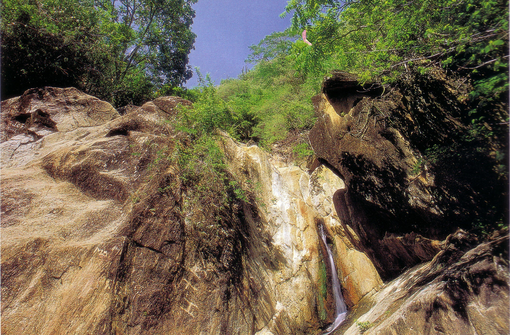
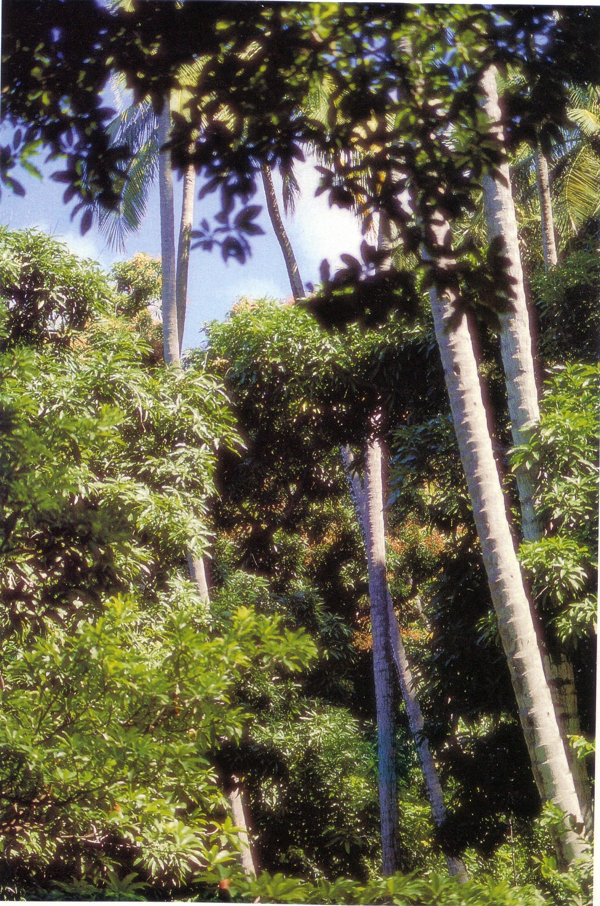
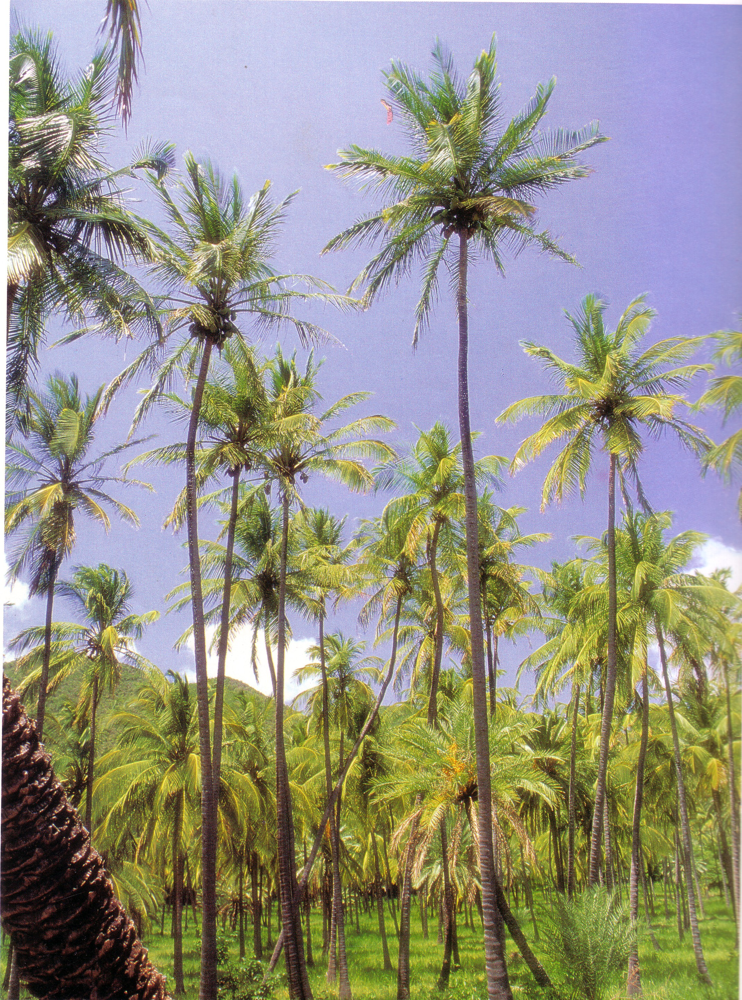
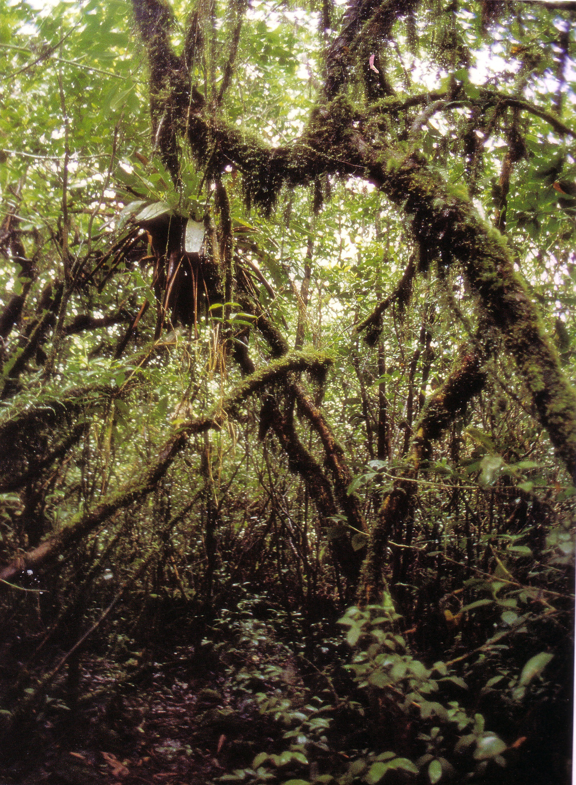
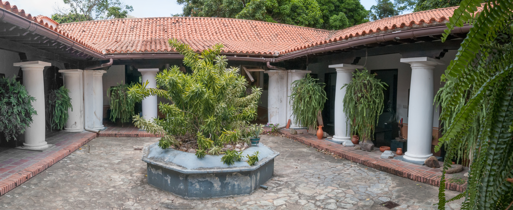
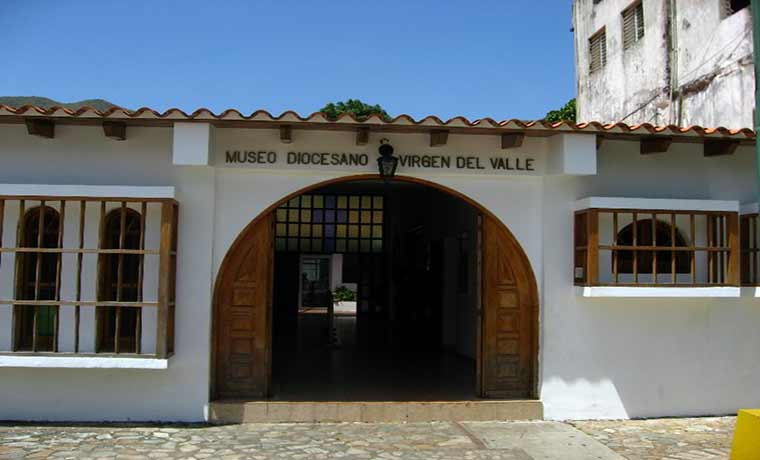
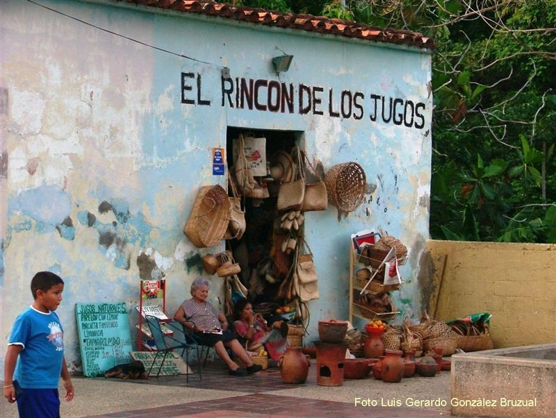

Pudiéramos entrar en consideración afirmando que, es inagotable cuanto se ha escrito sobre la Virgen del Valle y tan poco cuanto se ha dedicado a señalar las bondades y bellezas de ese pueblo, escogido por Dios, para servirle de hogar y darle el nombre que lleva esta advocación de María Sanísima. Nos referimos a El Valle de Gracia o el Valle del Espíritu Santo, con el que comúnmente lo designamos para diferenciarlo del Valle de Pedro González.
A los pies de la serranía de Copey, mejor conocida como la montaña de El Valle, y los no tan nombrados cerros: La Bruja, Anita y El Piache, se encuentra El Valle de Charaima, el cual pudiéramos considerar como una joya ecológica y paisajística, por la diversidad de su cobertura vegetal; esta varía desde sus faldas hasta su cima, en una gama que la enriquecen, desde palmeras y copeyes, poblados de bromelias, musgos, y helechos, hasta los frutales de las zonas bajas, sobre pobladas de mangos, nísperos, cocos, dátiles, jobos, castañas, caimitos, cotoperis, pomalacas y pan del año.
La calidad y fertilidad de sus suelos, en un pesado no muy remoto, se vio favorecida por las serpenteantes y desprendidas corrientes de agua cristalina que, cual hilos de plata, brotaban de los manantiales, escondidos debajo de raíces, troncos y piedras del arroyo; ellos vertían su fluido liquido, desde las cumbres de la sierra, en los dos afluentes que esperaban sedientos más abajo; conocidos como río grande y río chiquito, para luego unirse nuevamente y continuar el viaje, derrochando cascadas y posas hasta culminar con placidez en las playas de Guaraguao, sede de la primera fundación de Porlamar que en el aquel tiempo se conoció como "San Pedro Martir".

Fundado, entre 1500 y 1518, por españoles que tenían en esas tierras sus estancias, dedicadas al cultivo de maíz, yuca, frutos menores y a la cría de algunos animales, dada la fertilidad de sus suelos, regados por una corriente de agua cristalina que se distribuía día a día entre los diferentes huertos.



Situado a cinco (5) kilómetros de la Villa del Espíritu Santo, hoy Porlamar, que para aquel entonces era el centro de administrativo y religioso más importante de la isla. Todavía hoy, es un lugar lleno de magia, verdor y humedad, capital del Municipio Autónomo "Almirante José María García", con gente creyente, sonriente, alegre, dicharachera, trabajadora, hospitalaria, honesta, honrada, amable y agradable al trato; siempre dispuesto a hacer favores, solidaria, tolerante, caritativa y llena de bondad.
Su espacio geográfico, territorial y político administrativo, creció recientemente, a raíz de la última redistribución política territorial del estado, lo que generó a su vez un incremento demográfico considerable.
Al casco histórico del pueblo se llega por la antigua calle principal, o calle real, que une a Porlamar con el Poblado, La Cruz Grande, Conuco Largo, Toporo, La Plaza y las Piedras del Valle, bordeada esta de árboles centenarios y frondosos guayacanes.
Posteriormente se incorporó otra avenida que corre paralela a la anterior, por detrás del pueblo, desembocando en la vieja calle que nos lleva al sector de Las Piedras, conocido como "Caja de agua".
Hay una tercera calle de acceso que proviene de la Asunción y atravesando La Sierra nos conduce al otro sector de Las Piedras conocido como "La Batea" o "Camino Hondo".

Actualmente, dispone este centro poblado de la sede de la Alcaldía de García, su Concejo Municipal y de otras instituciones, instalaciones y servicios que son necesarios para su crecimiento y desarrollo. Sin embargo, no debemos olvidar que también es la cuna del General en Jefe Santiago Mariño Carige Fitzgerald, con plaza y museo erigidos en su honor, y del santuario levantando en honor a la Virgen del Valle, hoy Basílica Menor. Más recientemente, el pueblo adquirió relevancia al construírsele un liceo y un museo diocesano, una universidad y un centro clínico privado, una biblioteca pública y una casa de la cultura.

Existen otras instituciones como el mercado municipal, depósitos, embotelladoras, talleres, canteras, abastos, restaurantes, hoteles, entre otros, repartidos en otros pueblos y sectores del Municipio.
Estaríamos pecando si omitiéramos una verdad conocida por todos, el no reconocer que los cortes que se hicieron ala montaña de El Valle o montaña de Copey, en nombre del progreso y la civilización, interrumpieron el ya mermado flujo de agua natural que hasta mediados de los años cincuenta (50) fue abundante y permanente; hasta tal punto que era casi suficiente para abastecer la población de Porlamar y El Valle o para distribuirse en el riego de los huertos y sembradíos, ubicados en la zonas bajas.
Es triste y penoso para el vallero reconocerlo, pero la niebla melancólica, que pronto se transformaba en lluvia, se ha ido, ha huido, dejando de regar la extensa alfombra verde salpicada de epífetas, hasta donde bajaban, buscando el suelo, los bejucos y las lianas trepadoras, haciendo de este ecosistema un lugar acogedor, envidiable para ambos sectores de las vertientes, conocidas como "La Batea" y el "Abarcón de la Caja de Agua" o "Poza del Padre", sitios comúnmente visitados, en sus mejores años, cual santuario, por los nativos de la isla.
Entonces, era frecuente ver al riachuelo y las acequias correr todos los días; no era motivo de asombro ver los frutales preñados de color y dulzor, acariciados por pájaros de plumajes y trinos diversos que lucían sus mejores galas en aquel grandioso banquete, regalo de Dios y la naturaleza para una princesa que vive en el Valle, llamada María.
Eran los tiempos de los huertos con sus frutales, de los conucos y de la cría de aves de corral, del engorde de cochino, de rallar coco seco para obtener aceite, de tejer crinejas de cogollo de la hoja del dátil para hacer sombreros, de madurar nísperos y mangos con carburo para apurar la venta o de elaborar alpargatas, usando la goma de cauchos viejos como suela.
Con mucho afán y orgullo, se preparaba la tierra de los conucos para sembrar rubros muy margariteños, como el tomate, ají dulce, quimbombó y pepinillo, cuyo tamaño y sabor son exclusivos. El cultivo de la yuca, el topocho, el maíz y el guandul también era frecuente. ¿Quién no ha oído hablar de la variedad, calidad, tamaño y sabor de nuestros mangos o de nuestros nísperos, caimitos, ciruelas, jobos, mereyes y mameyes o de nuestros famosos turrones de coco, conservas de mango y batata o de las multisápidas empanadas de cazón?

Con el correr del tiempo, en la búsqueda de frenar los procesos migratorios y crear fuentes de trabajo, se crea la Zona Franca y el Puerto Libre, suplantando en algo la antigua base económica. En aras de la verdad, algo se alcanzó de estos objetivos. Sin embargo, para la población adulta que no estaba capacitada para los nuevos empleos, se rompió una tradición apegada a la tierra y las faenas del campo; se vieron obligados a emprender otras actividades que le sustituyeran sus antiguos beneficios económicos. Es así como logra expandirse la venta de empanadas, artículos e imágenes religiosas y el servicio de carros por puesto, amén de la venta clandestina de cerveza y terminales de lotería.
Lamentablemente - y esto lo señalo con mucha tristeza y dolor - a nosotros los valleros de la nuevas generaciones nos ha faltado empuje, tenacidad, arriesgo y expectativas de progreso que nos permita conformar empresas de producción y servicios generadoras de empleo y desarrollo. Nunca ha prevalecido entre nosotros el sentido de integración y de organización, ni tan siquiera para conformar una junta de vecinos que vele por los tantos problemas que siempre han aquejado al pueblo. El sentido de individualismo nunca nos llevó a mirar más allá de nuestras narices: tanto es así que jamás ha dispuesto el casco del pueblo de posadas, hoteles, restaurantes, fuentes de soda, librerías, lunchería, supermercados, parques de distracción, entre otros.
Es lamentable que, habiéndonos dotado Dios de dos grandes fuentes para obtener recursos, como lo son la belleza natural de este amado pueblo, la bondad y gloria de una Virgen Bonita, no hayamos sabido interpretar este mandato divino que debería invitarnos a la inversión en estas dos fuentes de hacer turismo, ecológico y religioso.
Este potencial, en lo ecológico, cuenta con varias zonas, entre las que pudieran destacarse La Batea, La Caja de Agua, El Abarcón, El Dique de Guatamare, La Sierra, El Cerro El Piache y La Laguna de las Marites.
Sin temor a equivocarnos, pudiéramos decir que a excepción de algunas ventajas, alcanzadas recientemente, proveniente en su gran mayoría del sector privado, el casco histórico de El Valle, su calle principal y sus alrededores, ha permanecido estancados y hasta en decaimiento de su infraestructura. Es necesario reflexionar y no dejar caer este pueblo en el olvido, sobre todo ahora que se cumplieron cien años de su coronación canónica.